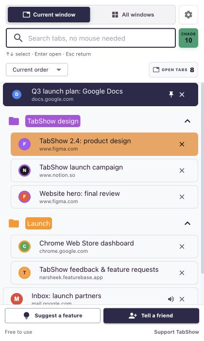

Type to find anything
Search tab titles, web addresses, or domains. Use ↑ ↓ to select a result and Enter to open it. Hover a result when you want a live preview.
Welcome to TabShow
Your tabs now live in a fast, searchable side panel. Hover to preview a page, then click only when it is the one you want.
Available in English, German, Simplified Chinese, and Traditional Chinese. TabShow follows your Chrome display language.
One click. No setup form.

Your first preview
Try this now. The panel can stay open beside this page.
Use the button above, the toolbar icon, or the keyboard shortcut.
Its full page appears. Move your pointer out of the side panel and TabShow returns you to where you started.
The selected page becomes your current tab. By default, TabShow closes the panel. Turn on Settings → Keep panel open after choosing a tab if you want it to stay beside your page.
Make it muscle memory
TabShow suggests these defaults. Chrome may leave one unassigned if another extension already uses it.
When you’re ready
Search tab titles, web addresses, or domains. Use ↑ ↓ to select a result and Enter to open it. Hover a result when you want a live preview.
Switch from Current window to All windows. Windows in the same Chrome profile appear here. Other profiles stay separate. Tabs in another window are click-to-switch, so hovering never steals focus.
Use current order, recently used, recently added (approx.), domain, or tab group. Your sort order, window scope, and panel settings stay saved.
In Settings, adjust Hover preview delay or turn off Preview tabs on hover to browse the list without switching pages. Appearance → System follows your light or dark preference; it does not copy a custom Chrome theme’s colors.
Chrome’s pin icon puts TabShow in the toolbar. To keep the panel open when you select a tab, use Keep panel open after choosing a tab in TabShow’s settings.
Open TabShow and make your first preview.